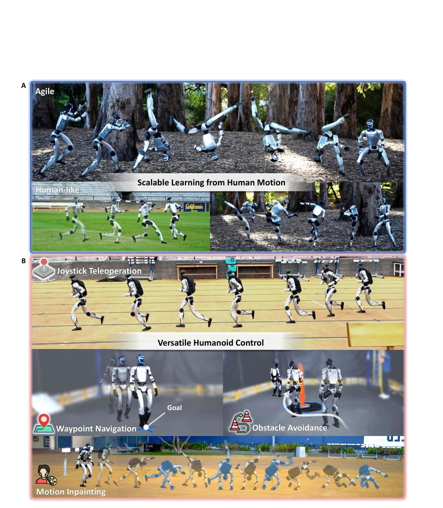
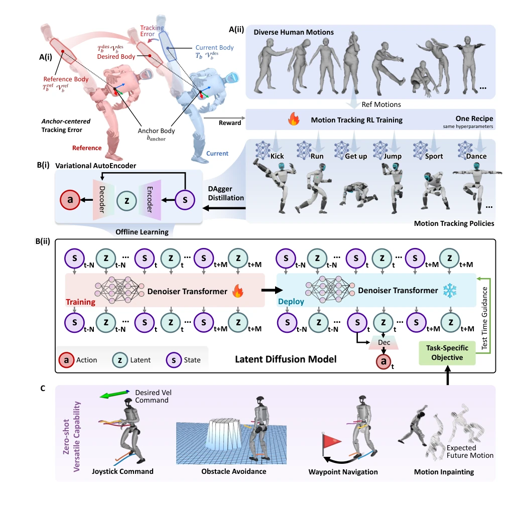
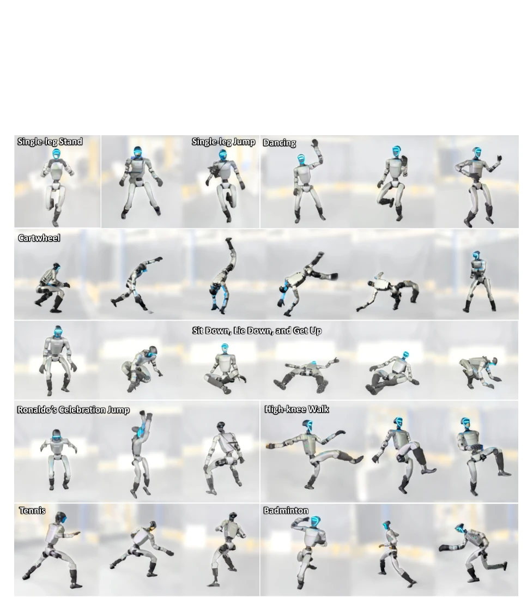
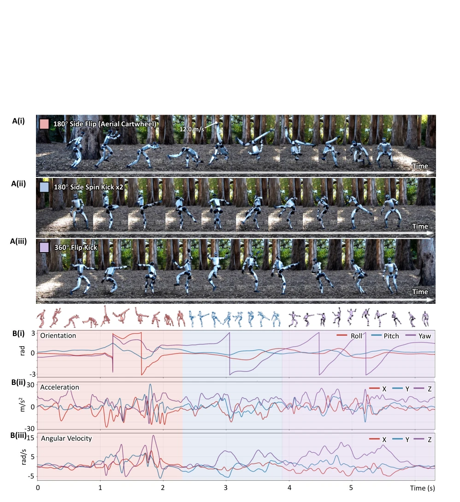
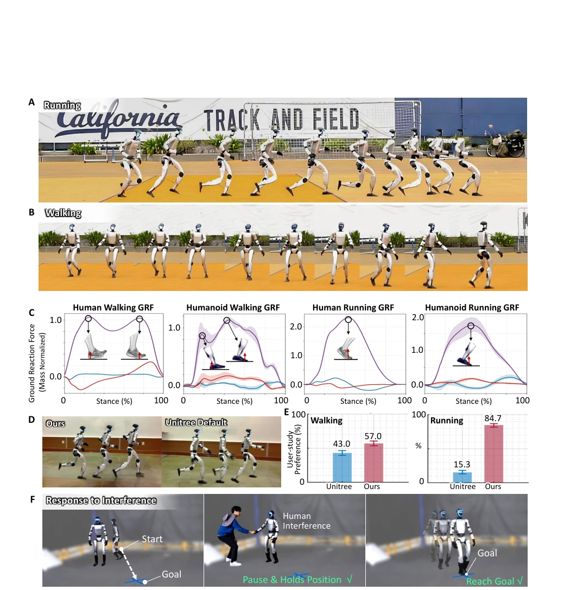
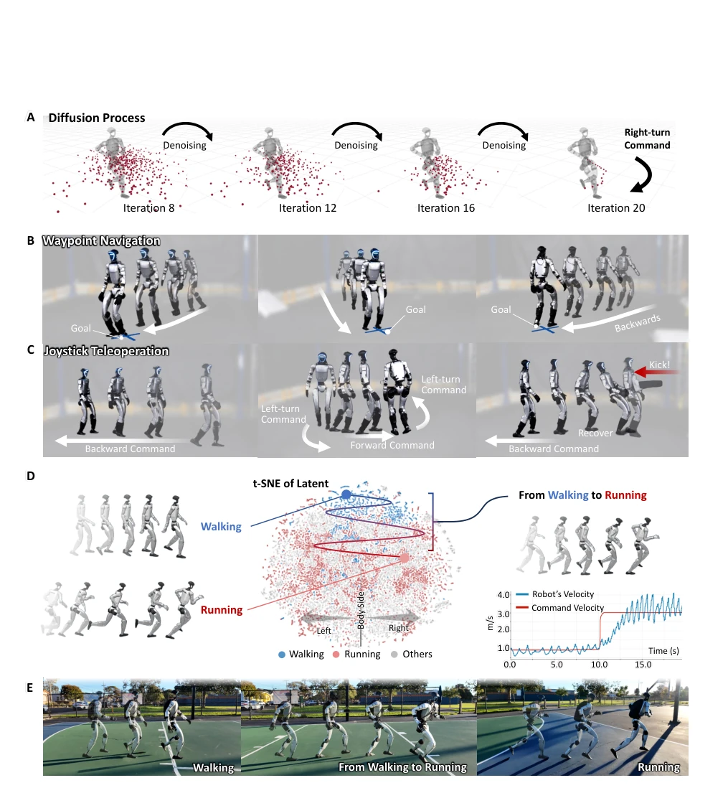
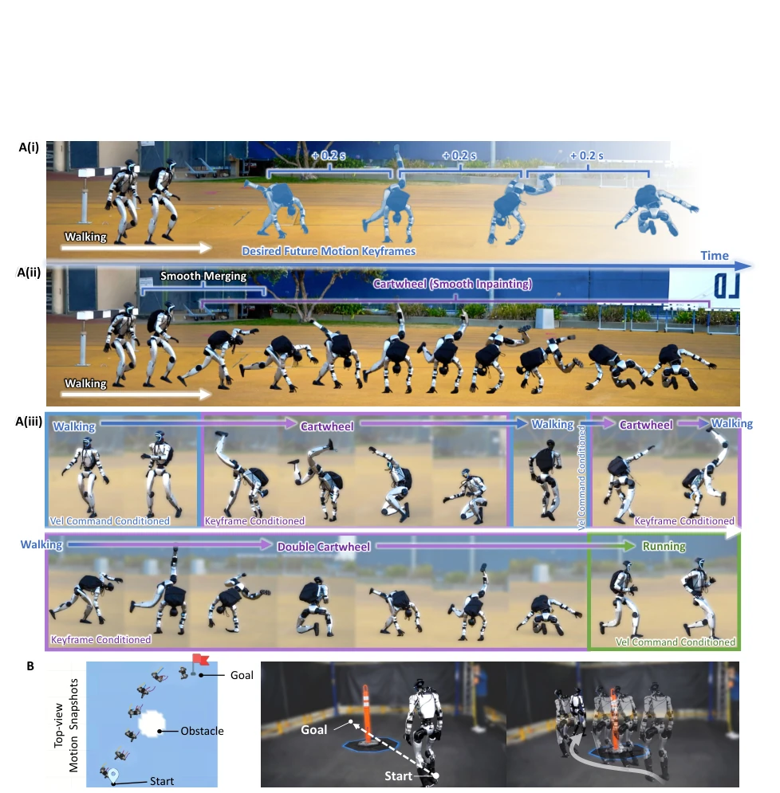

BeyondMimic attempts to address the pain point of humanoid robots "learning fast but using rigidly". It first uses RL to master a batch of human motions, then employs a diffusion model for "online planning", claiming zero-shot skill composition. The highlights are indeed impressive; the real robot performed backflips and kicks, and user voting acknowledged it looks more human-like than the Unitree native controller. But do not overhype it; this system requires extremely high state estimation, once proprioception drifts, the trajectory is ruined. Moreover, diffusion model inference latency and the 0.64-second prediction horizon limit long-horizon planning capabilities. The so-called "zero-shot" actually still relies on the action library during training; without skills in the action library, it cannot handle them. This is not a general-purpose robot at all, clearly an "action library administrator". Overall, it is an excellent attempt at engineering implementation, but still far from a general-purpose robot.
Humanoid robot control has long been trapped in the contradiction between "naturalness" and "generality". Traditional model control (e.g., CoM planning) is stable but movements are stiff, often exhibiting unnatural phenomena such as knee bending and constant center of mass (1, 13-15). Reinforcement learning (RL) can learn dynamic skills, but relies on extensive manual reward design, and policies are often task-specific, making generalization difficult (20-28). DeepMimic-like methods can mimic motions but lack task switching capabilities (32-35). Adversarial Motion Priors (AMPs) improve style generalization but cannot be reused across tasks (36-37). VAE generative models can combine skills but generalize poorly to implicit goals (e.g., obstacle avoidance) and are prone to jitter (46-48). BeyondMimic aims to learn from unlabeled human data, combining diffusion model online optimization to achieve zero-shot task adaptation without task fine-tuning.
The framework is divided into two stages. The first stage is scalable RL motion tracking. It adopts a unified MDP setting, sharing hyperparameters, requiring no per-action fine-tuning. The reward function is minimal, containing only task tracking terms and three regularization terms (joint limits, action smoothness, self-collision), combined with moderate domain randomization (friction, center of mass, joint offset), achieving high-fidelity Sim-to-Real transfer. The second stage is the Latent State-Action Diffusion Model (LDM). First, VAE encodes action trajectories to obtain a smooth latent space, then trains the diffusion model to learn the state-action distribution. During inference, classifier guidance is used to optimize new cost functions (e.g., velocity, obstacle avoidance, keyframes) during the denoising process, achieving predictive control. This design allows the model to adjust actions based on future state gradients, rather than simply memorizing trajectories, thereby supporting task composition and online planning.

Figure 1: Overview of the proposed versatile humanoid control framework. (A) Scalable

Figure 7: Overview of the framework. (A) Scalable learning of diverse human motions via motion
Trained on approximately 2.5 hours of human action data, verifying the transfer of 30 representative clips on the real robot. Compared to the Unitree native controller, user study (N=77) showed BeyondMimic significantly won in naturalness (70.8% vs 29.2%). GRF analysis indicated its gait is similar to humans. Experiments demonstrated zero-shot capabilities: velocity command walking, waypoint navigation, obstacle avoidance, and motion inpainting (Motion Inpainting). For example, through keyframe guidance, the robot can smoothly transition to a backflip. Ablation studies validated the effectiveness of reward terms and impedance settings. Limitations lie in state estimation errors propagating, and long-horizon planning is limited by the 0.64-second prediction horizon.

Figure 2: Diverse motion tracking policies deployed on a real humanoid robot. We demonstrate

Figure 3: Human-level Agility exhibited in a highly dynamic acrobatic motion. (A) Real-world

Figure 4: Human-like naturalness in walking and running motion. (A) Natural running on a

Figure 5: Command-conditioned locomotion via guided diffusion. (A) Visualization of diffu-

Figure 6: Task transition and composition. (A) Motion inpainting with future keyframes. (i)